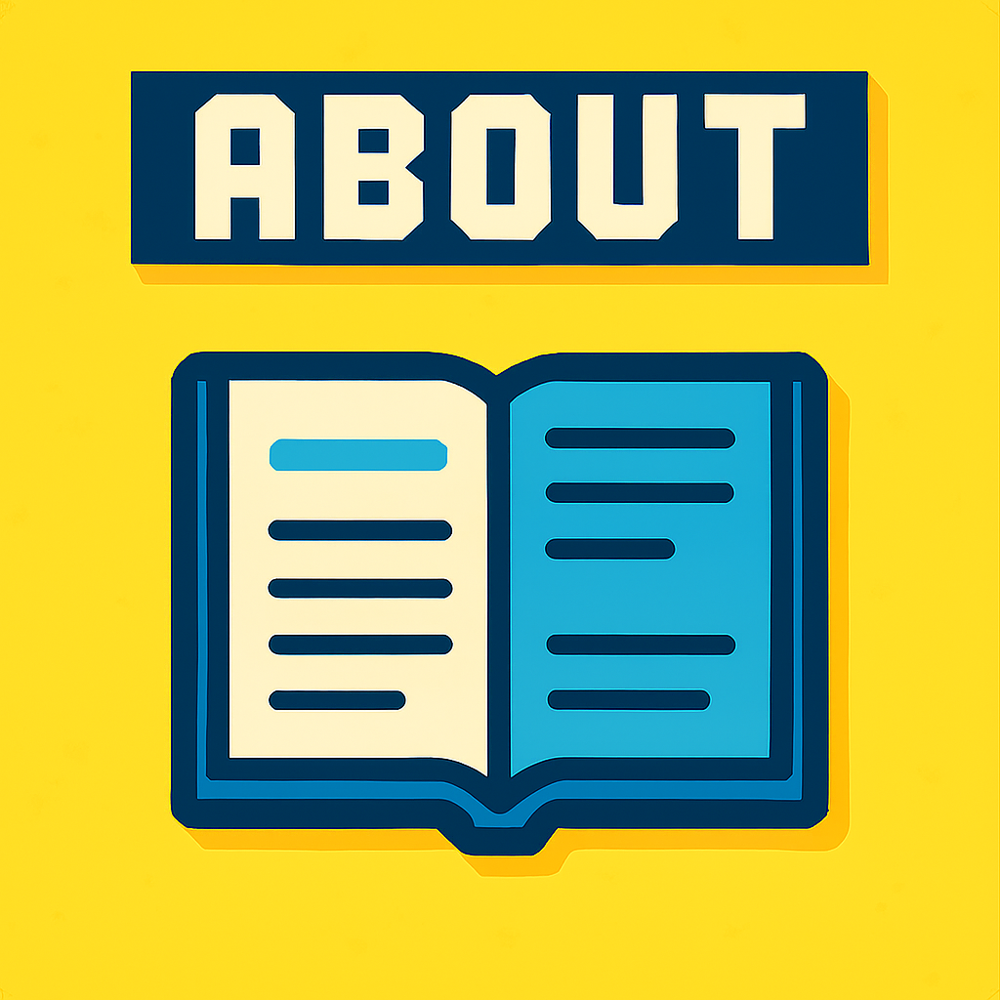
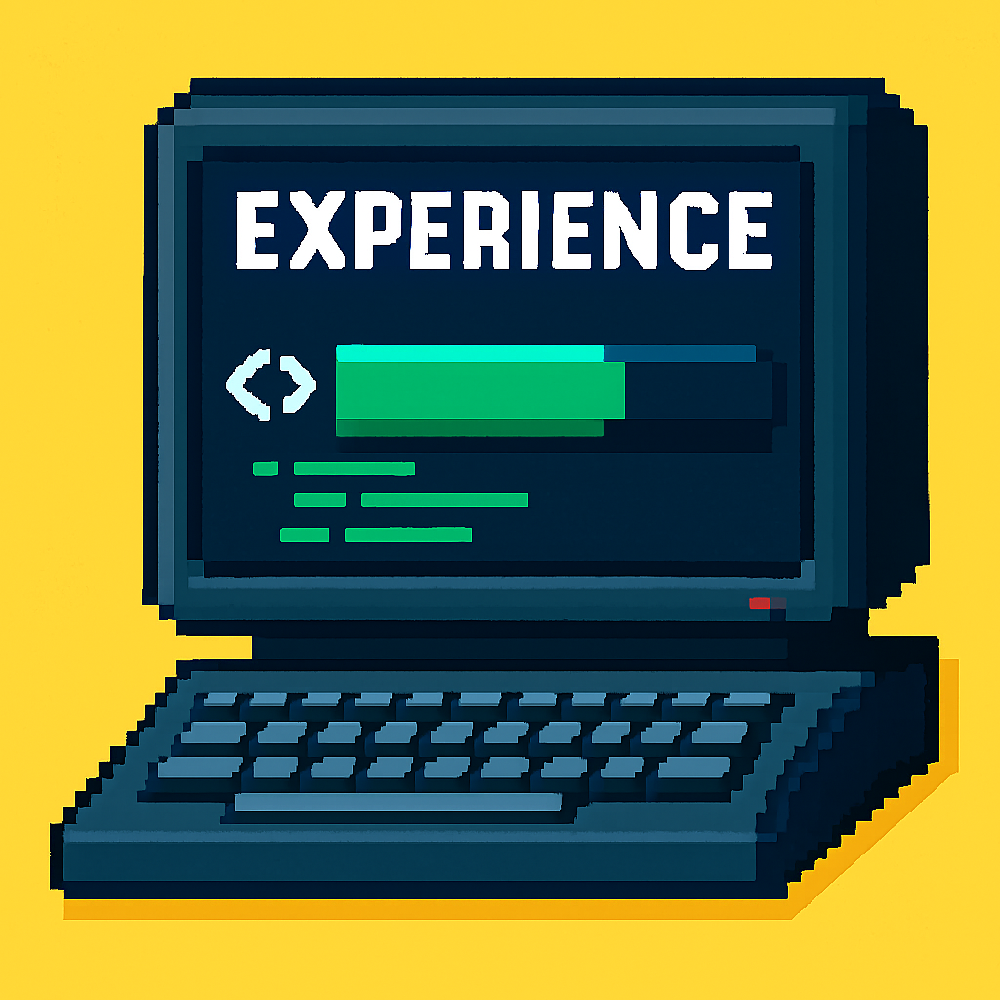
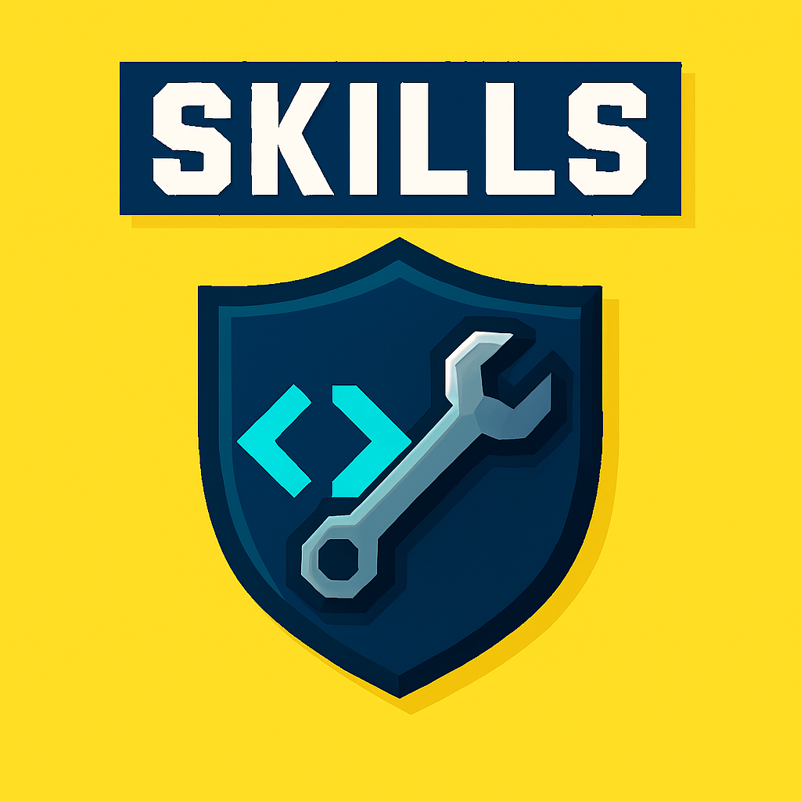
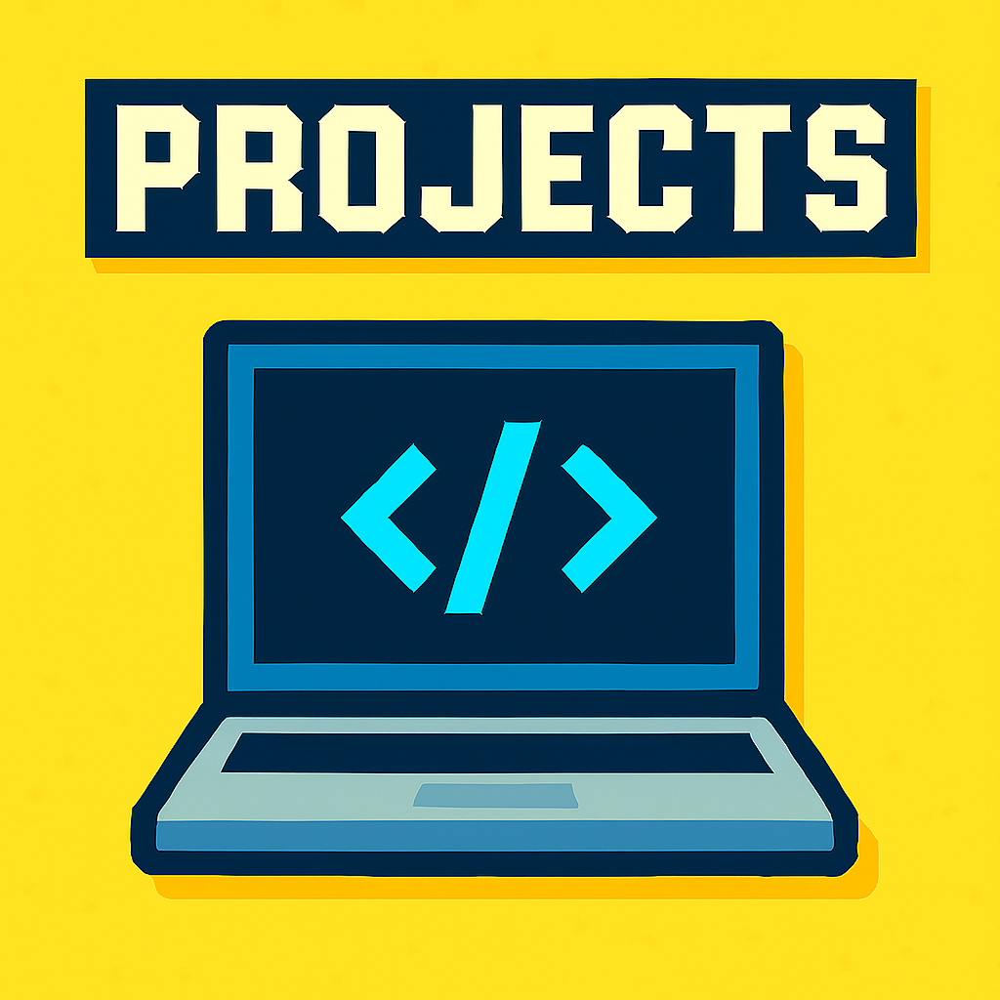

Contact Me!
About

I am an experienced front-end developer who enjoys turning ideas into responsive and accessible web applications using JavaScript, SASS, and PHP. I'm passionate about creating smooth, user-friendly experiences and take pride in building custom plugins and modules for WordPress and Drupal when additional functionality is needed. I thrive in small team environments where collaboration and critical thinking help me deliver solutions that make a meaningful impact, especially in public health initiatives. Accessibility is a priority—I ensure my work meets Section 508 standards and performs consistently across browsers. I am committed to writing clean, maintainable code and continuously improving my skills and workflows to better serve clients and users.
Experience

Software Engineer
Company: IQ Solutions
Employment Type: Full-time
Duration: November 2022 - Present (2 years 10 months)
Location: North Bethesda, Maryland, United States (Remote)
Job Responsibilities:
- Participate in a small team designing applications to facilitate public health initiatives
- Apply critical thinking in application design, requirements interpretation, and ideation in a collaborative environment
- Build systems that coexist with legacy code
- Maintain client's existing Drupal codebase
- Develop and maintain web-based systems and responsive mobile web applications using SASS, JavaScript, HTML5, and PHP
- Ensure your own and peer applications meet deliverable and functional requirements
- Perform cross-browser and usability testing, ensuring Section 508 accessibility compliance
- Conduct code reviews and mentor peer developers, enforcing coding standards and writing clean code
- Write and maintain Gulp or other build tool scripts for testing code
- Learn and incorporate modern web development workflows using CSS preprocessors, JavaScript transpilers, and package managers to maintain a modular and maintainable codebase
Software Engineer
Company: TekSynap
Employment Type: Full-time
Duration: October 2021 - November 2022 (1 year 2 months)
Location: United States (Remote)
Job Responsibilities:
- Collaborate within a small team to design applications supporting public health initiatives
- Apply critical thinking to application design, requirements analysis, and ideation in a cooperative environment
- Develop systems compatible with and able to integrate alongside legacy codebases
- Maintain and enhance clients' existing WordPress codebases and themes
- Create custom WordPress plugins tailored to meet team and client requirements
- Build and sustain responsive web applications using SASS, JavaScript, HTML5, and PHP
- Ensure applications developed by self and peers satisfy functional and deliverable requirements
- Conduct cross-browser and usability testing while ensuring compliance with Section 508 accessibility standards
- Perform code reviews to uphold group coding standards and emphasize clean, well-documented code
Skills

Technical Skills:
- Front-end development with HTML5, CSS3, SCSS, JavaScript, and Bootstrap
- Backend scripting and templating with PHP, Twig, and YAML
- Cross-browser compatibility and Section 508 accessibility compliance
- Responsive design implementation using USWDS
- Development with Drupal, WordPress, and Mura CMS
- Source control using Git, GitHub, AWS CodeCommit
- Built and maintained containerized development environments using Docker
- Deployed and maintained Drupal sites leveraging Acquia Cloud, Jenkins, and GitHub Actions—using each platform's pipelines and automation features to streamline continuous integration and deployment processes
Project & Collaboration:
- Agile and Scrum workflow participation
- Effective communication with cross-functional teams and stakeholders
- Issue tracking and team collaboration via JIRA, Microsoft Teams, Office 365
- Technical documentation and knowledge base creation
- Delivers under tight deadlines with strong attention to detail and quality
Professional Strengths:
- Clear and concise technical communication
- Adaptable in fast-paced environments
- Strong problem-solving and debugging skills
- Consistent delivery of high-quality solutions
- Proactive in improving accessibility and usability
Clearance
Public Trust
Projects
